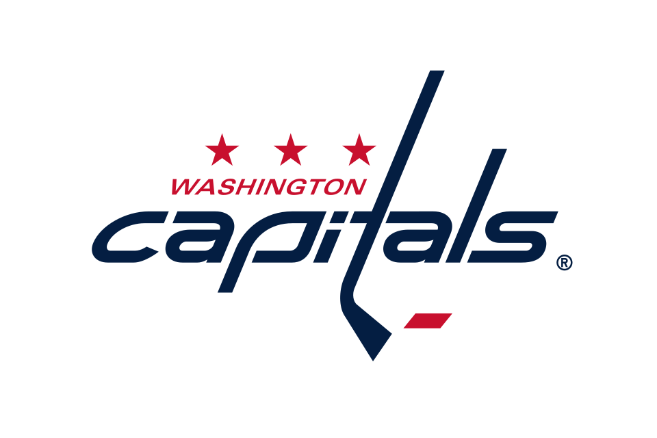

Buffalo Sabres
Atlantic · Eastern Conference · 40 headlines in the last 30 days
Sabres highlights
6 videos
 Sabres vs. Panthers
Sabres vs. Panthers
 Sabres vs. Capitals
Sabres vs. Capitals
 Sabres vs. Flyers
Sabres vs. Flyers
 Sabres vs. Stars
Sabres vs. Stars
 Sabres vs. Blackhawks
Sabres vs. Blackhawks Lightning vs. Sabres
Lightning vs. SabresLatest Sabres news
40 stories
Bennett has hat trick, helps set up Vilmanis' winner as Panthers hold off Sabres 4-3
(AP) — Sam Bennett had a hat trick and set up the go-ahead goal by Sandis Vilmanis with 3:18 left, and the Florida Panthers beat the Buffalo Sabres 4-3 on Saturday night.Bennett set up the eventual winner by picking up the puck behind the net, bringing it out nearly to the blue line, spinning and then shooting.

Report: Sabres Continue To Search For Scoring Help
Buffalo starting back-to-back contests in the state of Florida after getting to .500 with a win in Washington on Thursday


Sabres Break Out Offensively, End Losing Streak Against Struggling Capitals
Buffalo get back to .500 (9-9-4) after a 6-3 win over the Washington Capitals

The Ex-Files - How Are Former Sabres Playing In The Atlantic Division Doing?
Former Sabre Sam Reinhart leads the Florida Panthers with 12 goals

Quinn scores 2, Sabres top Caps to end 5-game skid
Dahlin has goal, assist for Buffalo; Ovechkin sets assist record for Washington

The Ex-Files: How Are The Former Sabres Doing With Metropolitan Division Clubs?
Former Sabre Jankowski is on pace to exceed his career goal mark
Former Sabres Star Is On Fire With Big Rival
This former Sabres star is having an impressive start to the season.


As Sabres Careen Through Losing Skid, It's Clear What Their Biggest Need Is – And It's Solving Their Woes In Net
The Buffalo Sabres are in the midst of a five-game losing skid, and goaltending has once again come into focus as they try righting the ship. Is Buffalo's current three-goalie system a good idea? Or is it time for the Sabres to throw caution to the wind and trade for a veteran goalie?

Former Sabres Prospect Is Impressing In AHL With New Team
This former Sabres prospect is playing well in the AHL.
Sabres November Swoon Extends To Five With Loss To Flyers
Buffalo are now under .500 (8-9-4) after a 4-3 loss to the Philadelphia Flyers
How Are Ex-Sabres Doing With Their Current Clubs? - Central Division
Former Sabres defenseman Bowen Byram has been out a month with a mysterious injury.
Flyers Veterans Finally Step Up, Close Out Win vs. Sabres
After a sluggish start incited boos in Philadelphia, the veterans rallied.

Christian Dvorak lifts Flyers past Sabres 4-3 as Matvei Michkov extends point streak
PHILADELPHIA (AP) — Christian Dvorak and Jamie Drysdale each had a goal and an assist, and Matvei Michkov extended his point streak to five games with two assists as the Philadelphia Flyers beat the scuffling Buffalo Sabres 4-3 on Tuesday night.Travis Sanheim and Owen Tippett also scored for the Flyers.


Sabres Playoff Odds Declining With Their November Swoon
Buffalo is currently 8-8-4, only two points out of last place in the Atlantic Division

Flyers come back from slow start to beat Sabres, gain some more momentum
The Flyers took down the Sabres, 4-3, Tuesday night at Xfinity Mobile Arena.

Sabres Potentially Open To Sending Kulich To The AHL To Find His Game
The 22-year-old forward has three points in 12 games and has been injured twice this season.

Stars captain Benn reaches 1,000-point milestone in win
Stars captain Jamie Benn scored his 1,000th career NHL point with a goal against the Sabres.

Update On How Ex-Sabres Doing In The Pacific Division
The Buffalo Sabres are in the midst of a slump and on the outside looking in of the Eastern Conference playoff picture with a .500 record.
Pickups: Use Sabres, Blackhawks in your lineups this week
Begin your fantasy hockey week with forwards, defensemen, goalies and streamers to add to your lineup.
Former Sabres Goalie Is Dominating This Season
This former Sabres goalie is having a very good season.

Levi Stays Hot In Edmonton, Sabres Goaltending Actually Worse
The Buffalo Sabres traded Devon Levi because they didn't have room or use for him in their goaltending system, but four months later, he recorded a shutout for the Edmonton Oilers while Buffalo is struggling in net.


Benn gets 1,000th point, Stars shut out Sabres
Forward reaches milestone with goal, Oettinger makes 22 saves for Dallas

Oettinger makes 22 saves as the Stars beat the Sabres 2-0
DALLAS (AP) — Jake Oettinger made 22 saves to lead the Dallas Stars to a 2-0 win over the Buffalo Sabres on Saturday night, just two days after being pulled after allowing a season-high six goals.It’s Oettinger’s fourth shutout this season and first since Oct.

Sabres Are In A Familar Freefall – But They Likely Don't Have A Late-Season Comeback Under Their Sleeves
The Buffalo Sabres lost their fourth straight game Saturday, falling to the Dallas Stars to drop their record to 8-84 this season. Buffalo's current skid looks much like their awful start to the 2025-26 season – but this year, the Sabres almost assuredly don't have a meaningful turnaround coming.

Stars captain Jamie Benn records his 1,000th career NHL point vs the Sabres
DALLAS (AP) — Dallas captain Jamie Benn scored a second-period goal during Saturday night’s game against the Buffalo Sabres for his 1,000th career NHL point, all with the Stars.Benn, 37, and in his 18th NHL season, is second to Hall of Famer Mike Modano (1,359) in career points for the franchise that began as the…
Sabres Scoring Struggles Have Them Falling Behind In Playoff Race
Buffalo get a point after a 3-2 overtime loss to the Chicago Blackhawks

Frank Nazar Scores Twice, Ryan Donato Wins It For Blackhawks 3-2 Over Sabres In Overtime
The Chicago Blackhawks defeated the Buffalo Sabres in overtime on Thursday. Ryan Donato had the game-winning goal.

Blackhawks beat the Sabres 3-2 in overtime to end 6-game losing streak
CHICAGO (AP) — Ryan Donato scored on a wrist shot from between the circles at 3:12 of overtime and the Chicago Blackhawks beat the Buffalo Sabres 3-2 on Thursday night to end a six-game losing streak.Donato scored after the Blackhawks failed to capitalize on a late power play that extended into overtime after…

Sabres Should Consider Targeting Canucks Skilled Forward
The Sabres should consider pursuing this Canucks forward.


Sabres' Losses To Golden Knights, Lightning Show How Far Buffalo Has To Go To Be Elite
The Buffalo Sabres have had a mediocre start to the 2026-27 season, but their most recent two games – defeats at the hands of the Vegas Golden Knights and Tampa Bay Lightning – show that the Sabres are nowhere near the elite form they were in last season. What does Buffalo need to do to improve?


Blackhawks Vs Sabres: Projected Lineup, How To Watch, & More Ahead Of Game 19
The Chicago Blackhawks will take on the Buffalo Sabres for Thursday night action.